Candidate List 20260803Last night — ZTF: 3,121 passed basic cuts (98 young) · LSST: 0 passed basic cuts (0 young)Previous Day Next Day
Section 1: New Sources (age<1d) Section 2: Old (1-5d) sources observed last nightplaceholder
Section 1: New Afterglow/FBOT Cands Last Night (3)
1. [ZTF] ZTF26ablevah (Afterglow?) [Back to Top] [Share] [Trigger Swift] [Fritz Alert] [Fritz Source] [Lasair]RA, Dec: 292.72675, -4.23224 19h30m54.42s, -4d-13m-56.06sGalactic (l, b): 33.64605, -10.70483 ext(g-r) = 0.606

TESS: Sectors [54 81]
PS1: 1 source in 3 arcsec Closest: d = 2.65 arcsec photoz=0.88+/-0.22 peak abs mag = -27.43
LegacySurvey: 0 sources in 3 arcsec

Extinction-corrected gr color:
From alerts: 0.02 +/- 0.09 mag
Extinction-corrected gi color:
From alerts: -0.56 +/- 0.1 mag
Extinction-corrected ri color:
From alerts: -0.58 +/- 0.07 mag
Consistent with synchrotron, g-r>0!
Rise Rate:
g: 0.27 mag/day
r: 0.67 mag/day
i: 0.37 mag/day
Fade Rate:
2. [ZTF] ZTF26ablimqk (Afterglow?) [Back to Top] [Share] [Trigger Swift] [Fritz Alert] [Fritz Source] [Lasair]RA, Dec: 11.54864, -8.97479 0h46m11.67s, -8d-58m-29.25sGalactic (l, b): 118.7822, -71.80428 ext(g-r) = 0.037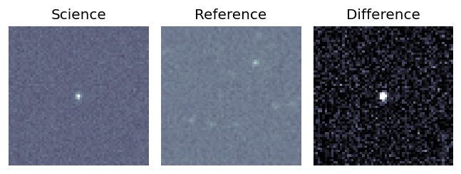
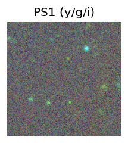
TESS: Sectors [ 3 30 97]
PS1: 0 sources in 3 arcsec
LegacySurvey: 1 sources in 3 arcsec Closest: d = 6.94 arcsec, 102.8 deg (east of north) photoz=1.02 (68% bounds 0.75, 1.22), type=REX peak abs mag = -26.58 (68% bounds -25.75, -27.05)
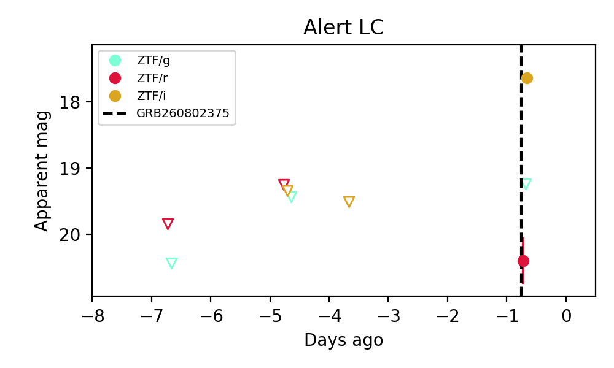
Extinction-corrected gr color:
From alerts: -1.19 +/- 99 mag
Extinction-corrected gi color:
From alerts: 1.55 +/- 99 mag
Extinction-corrected ri color:
From alerts: 2.74 +/- 0.36 mag
Consistent with synchrotron, g-r>0!
Rise Rate:
i: 0.63 mag/day
Fade Rate:
3. [ZTF] ZTF26ablipib (FBOT?) [Back to Top] [Share] [Trigger Swift] [Fritz Alert] [Fritz Source] [Lasair]RA, Dec: 341.37263, 22.76343 22h45m29.43s, 22d45m48.33sGalactic (l, b): 88.51402, -31.56058 ext(g-r) = 0.069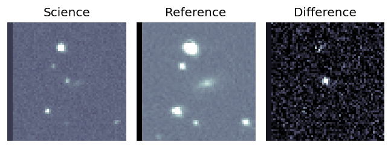
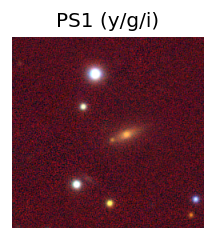
TESS: Sectors 83
NED (10 arcsec):Found NED spec-z: z=0.09; peak abs mag = -19.89
PS1: 0 sources in 3 arcsec
LegacySurvey: 1 sources in 3 arcsec Closest: d = 2.34 arcsec, 29.7 deg (east of north) photoz=0.67 (68% bounds 0.49, 0.79), type=EXP peak abs mag = -24.57 (68% bounds -23.76, -25.0)
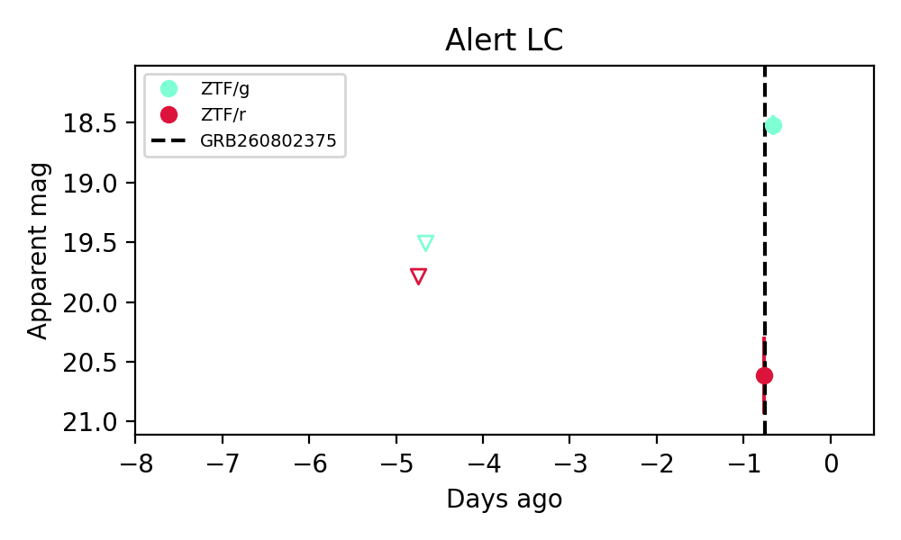
Extinction-corrected gr color:
From alerts: -2.16 +/- 0.33 mag
Rise Rate:
g: 0.25 mag/day
Fade Rate:
Section 2: Older Sources Observed Last Night (11)
0. [ZTF] ZTF26abkcmvx (FBOT?) [Back to Top] [Share] [Trigger Swift] [Fritz Alert] [Fritz Source] [Lasair]RA, Dec: 221.24997, 1.41001 14h44m59.99s, 1d24m36.04sGalactic (l, b): 354.35653, 52.55433 ext(g-r) = 0.042

TESS: Sectors 51
NED (10 arcsec):Found NED spec-z: z=0.03; peak abs mag = -18.93
PS1: 0 sources in 3 arcsec
LegacySurvey: 1 sources in 3 arcsec Closest: d = 2.09 arcsec, 337.7 deg (east of north) photoz=0.07 (68% bounds 0.02, 0.19), type=REX peak abs mag = -20.4 (68% bounds -17.25, -22.74)

Extinction-corrected gr color:
From alerts: -0.15 +/- 0.07 mag
Extinction-corrected gi color:
From alerts: -0.32 +/- 0.18 mag
Extinction-corrected ri color:
From alerts: -0.34 +/- 0.18 mag
Rise Rate:
g: 0.23 mag/day
r: 0.22 mag/day
i: 0.44 mag/day
Fade Rate:
1. [ZTF] ZTF26abkoycd (Afterglow?FBOT?) [Back to Top] [Share] [Trigger Swift] [Fritz Alert] [Fritz Source] [Lasair]RA, Dec: 295.28401, 60.82161 19h41m8.16s, 60d49m17.79sGalactic (l, b): 92.93893, 17.7442 ext(g-r) = 0.063

TESS: Sectors [ 14 15 16 17 18 20 21 23 40 41 47 48 50 51 54 55 56 57
58 59 60 73 74 75 76 77 81 82 83 84 85 86 119 120 121]
PS1: 0 sources in 3 arcsec
LegacySurvey: 1 sources in 3 arcsec Closest: d = 7.58 arcsec, 237.0 deg (east of north) photoz=0.1 (68% bounds 0.05, 0.31), type=PSF peak abs mag = -20.04 (68% bounds -18.44, -22.7)

Extinction-corrected gr color:
From alerts: 0.09 +/- 0.29 mag
Consistent with synchrotron, g-r>0!
Rise Rate:
g: 0.56 mag/day
r: 1.85 mag/day
Fade Rate:
g: 0.36 mag/day
r: 0.37 mag/day
2. [ZTF] ZTF22abfxgup (FBOT?) [Back to Top] [Share] [Trigger Swift] [Fritz Alert] [Fritz Source] [Lasair]RA, Dec: 285.39396, -3.44544 19h 1m34.55s, -3d-26m-43.58sGalactic (l, b): 31.01597, -3.8238 ext(g-r) = 0.965

TESS: Sectors 80
PS1: 1 source in 3 arcsec Closest: d = 0.20 arcsec photoz=0.40+/-0.06 peak abs mag = -24.20
LegacySurvey: 0 sources in 3 arcsec

Extinction-corrected gr color:
From alerts: -0.35 +/- 0.18 mag
Extinction-corrected gi color:
From alerts: -0.48 +/- 0.14 mag
Extinction-corrected ri color:
From alerts: -0.13 +/- 0.14 mag
Consistent with synchrotron, g-r>0!
Rise Rate:
g: 0.11 mag/day
r: 0.28 mag/day
i: 0.15 mag/day
Fade Rate:
3. [ZTF] ZTF26abkqcko (Afterglow?) [Back to Top] [Share] [Trigger Swift] [Fritz Alert] [Fritz Source] [Lasair]RA, Dec: 297.7608, 39.15655 19h51m2.59s, 39d 9m23.57sGalactic (l, b): 73.99735, 6.34182 ext(g-r) = 0.317

TESS: Sectors [ 14 15 54 55 74 75 81 82 119 120]
PS1: 0 sources in 3 arcsec
LegacySurvey: 0 sources in 3 arcsec

Extinction-corrected gr color:
From alerts: -0.45 +/- 0.13 mag
Rise Rate:
g: 1.6 mag/day
r: 0.28 mag/day
Fade Rate:
g: 0.12 mag/day
r: 0.29 mag/day
4. [ZTF] ZTF26abldxtk (FBOT?) [Back to Top] [Share] [Trigger Swift] [Fritz Alert] [Fritz Source] [Lasair]RA, Dec: 226.74727, 10.5778 15h 6m59.35s, 10d34m40.08sGalactic (l, b): 12.08469, 54.09173 ext(g-r) = 0.044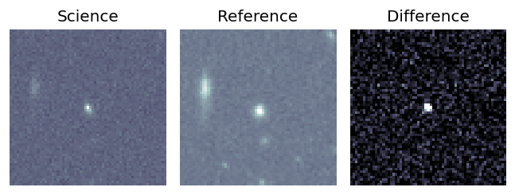
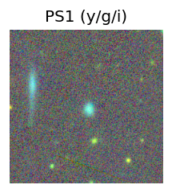
TESS: Sectors 51
SDSS (<15 kpc):Found SDSS phot-z: z=0.09; peak abs mag = -19.30
PS1: 0 sources in 3 arcsec
LegacySurvey: 1 sources in 3 arcsec Closest: d = 1.71 arcsec, 210.8 deg (east of north) photoz=0.13 (68% bounds 0.1, 0.14), type=SER peak abs mag = -19.95 (68% bounds -19.35, -20.27)
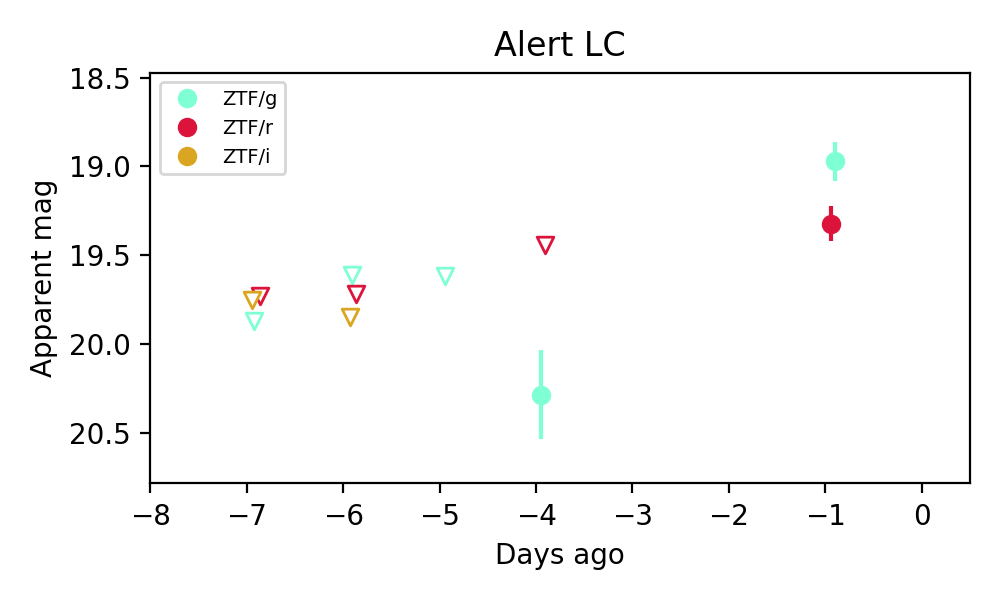
Extinction-corrected gr color:
From alerts: -0.4 +/- 0.15 mag
Rise Rate:
g: 0.43 mag/day
r: 0.08 mag/day
Fade Rate:
5. [ZTF] ZTF26ableavz (Afterglow?) [Back to Top] [Share] [Trigger Swift] [Fritz Alert] [Fritz Source] [Lasair]RA, Dec: 258.44376, 46.84485 17h13m46.50s, 46d50m41.46sGalactic (l, b): 72.80937, 35.75098 ext(g-r) = 0.04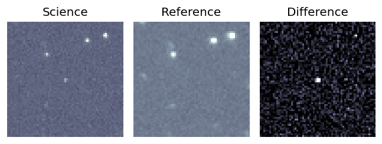
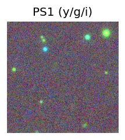
TESS: Sectors [ 24 25 26 51 52 53 78 79 80 117 118]
PS1: 0 sources in 3 arcsec
LegacySurvey: 1 sources in 3 arcsec Closest: d = 5.97 arcsec, 53.9 deg (east of north) photoz=1.04 (68% bounds 0.87, 1.21), type=REX peak abs mag = -25.23 (68% bounds -24.76, -25.64)
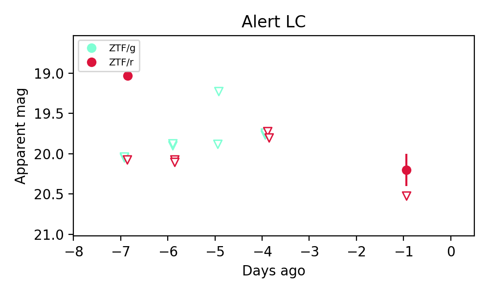
Extinction-corrected gr color:
From alerts: 0.97 +/- 99 mag
Rise Rate:
r: 0.6 mag/day
Fade Rate:
r: 1.07 mag/day
6. [ZTF] ZTF26ablgqdl (Afterglow?) [Back to Top] [Share] [Trigger Swift] [Fritz Alert] [Fritz Source] [Lasair]RA, Dec: 325.47006, 43.09909 21h41m52.81s, 43d 5m56.71sGalactic (l, b): 90.12075, -7.37695 ext(g-r) = 0.533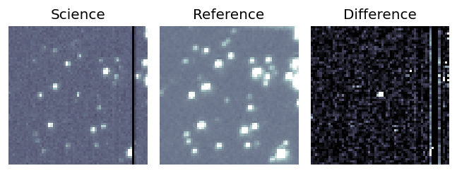
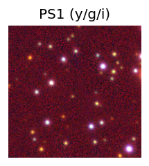
TESS: Sectors [ 15 16 56 76 83 121]
PS1: 0 sources in 3 arcsec
LegacySurvey: 0 sources in 3 arcsec
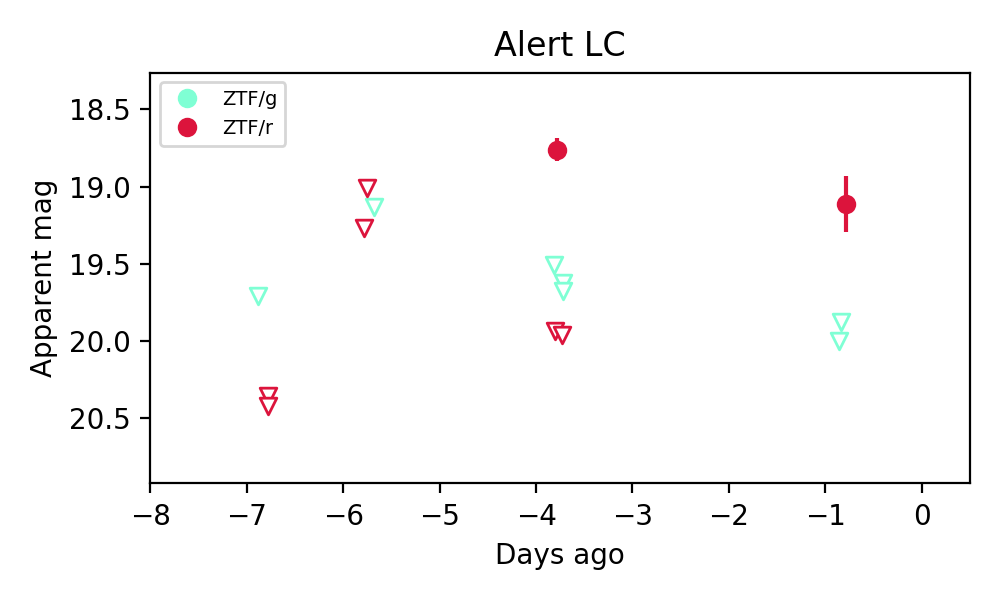
Extinction-corrected gr color:
From alerts: 0.35 +/- 99 mag
Rise Rate:
r: 59.86 mag/day
Fade Rate:
r: 21.67 mag/day
7. [ZTF] ZTF26ablgwwh (FBOT?) [Back to Top] [Share] [Trigger Swift] [Fritz Alert] [Fritz Source] [Lasair]RA, Dec: 315.46758, 22.97601 21h 1m52.22s, 22d58m33.62sGalactic (l, b): 69.42037, -15.28179 ext(g-r) = 0.142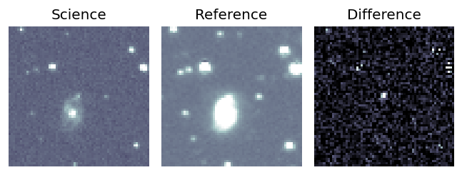
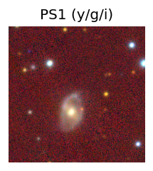
TESS: Sectors [ 15 41 55 82 120]
SDSS (<15 kpc):Found SDSS phot-z: z=0.20; peak abs mag = -20.80
PS1: 1 source in 3 arcsec Closest: d = 1.80 arcsec photoz=0.05+/-0.01 peak abs mag = -17.69
LegacySurvey: 0 sources in 3 arcsec
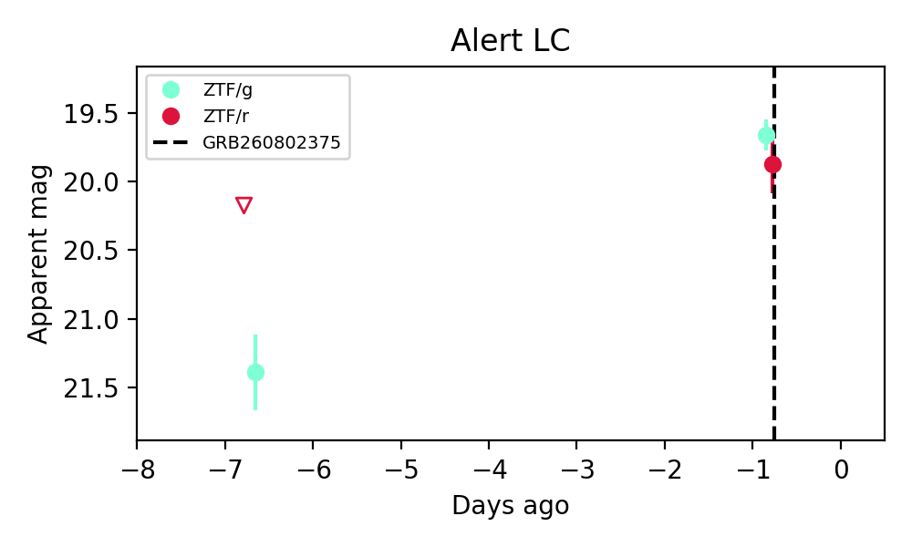
Extinction-corrected gr color:
From alerts: -0.36 +/- 0.24 mag
Rise Rate:
g: 0.3 mag/day
r: 0.1 mag/day
Fade Rate:
8. [ZTF] ZTF26ablhblt (Afterglow?) [Back to Top] [Share] [Trigger Swift] [Fritz Alert] [Fritz Source] [Lasair]RA, Dec: 356.86422, 79.90942 23h47m27.41s, 79d54m33.91sGalactic (l, b): 120.03185, 17.39979 ext(g-r) = 0.227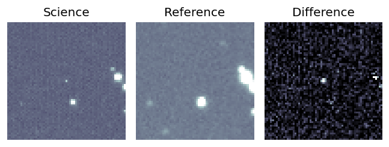
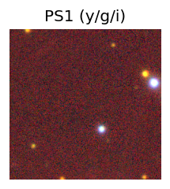
TESS: Sectors [18 19 24 26 52 53 58 59 73 78 79 85 86]
PS1: 0 sources in 3 arcsec
LegacySurvey: 0 sources in 3 arcsec
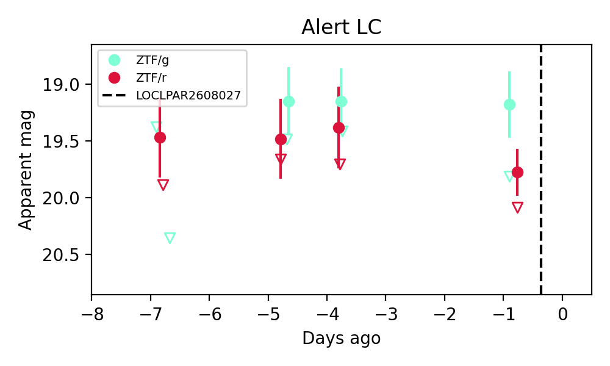
Extinction-corrected gr color:
From alerts: -0.82 +/- 0.36 mag
Rise Rate:
g: 0.6 mag/day
r: 0.49 mag/day
Fade Rate:
g: 0.23 mag/day
9. [ZTF] ZTF26abliemu (FBOT?) [Back to Top] [Share] [Trigger Swift] [Fritz Alert] [Fritz Source] [Lasair]RA, Dec: 4.11673, 46.87907 0h16m28.02s, 46d52m44.67sGalactic (l, b): 116.7402, -15.57181 ext(g-r) = 0.114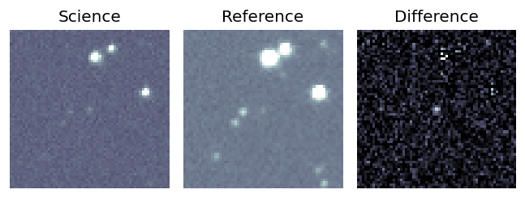
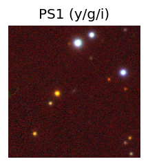
TESS: Sectors [57 84]
PS1: 1 source in 3 arcsec Closest: d = 0.55 arcsec photoz=0.31+/-0.16 peak abs mag = -21.52
LegacySurvey: 0 sources in 3 arcsec
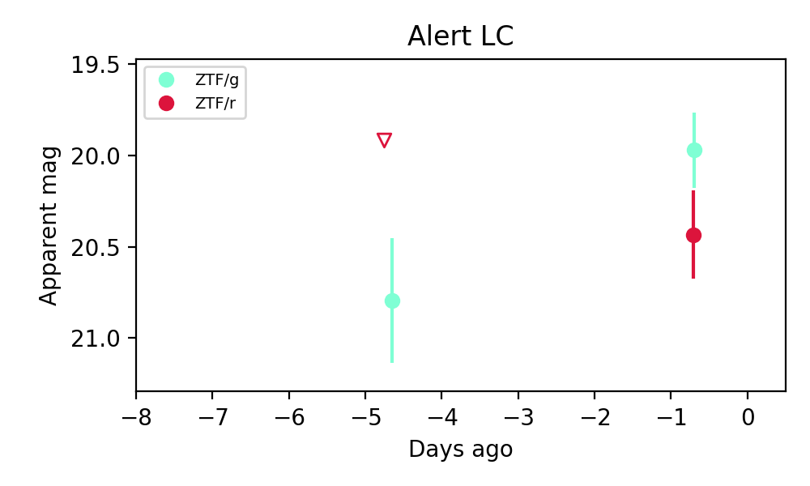
Extinction-corrected gr color:
From alerts: -0.58 +/- 0.32 mag
Rise Rate:
g: 0.21 mag/day
Fade Rate:
10. [ZTF] ZTF26ablihla (FBOT?) [Back to Top] [Share] [Trigger Swift] [Fritz Alert] [Fritz Source] [Lasair]RA, Dec: 17.07432, -10.55542 1h 8m17.84s, -10d-33m-19.50sGalactic (l, b): 137.20475, -72.95829 ext(g-r) = 0.036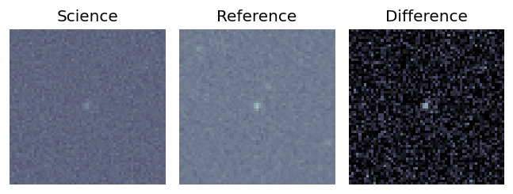
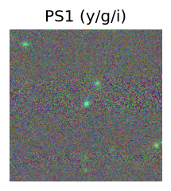
TESS: Sectors [ 3 30 97]
SDSS (<15 kpc):Found SDSS phot-z: z=0.31; peak abs mag = -21.78
PS1: 0 sources in 3 arcsec
LegacySurvey: 1 sources in 3 arcsec Closest: d = 0.16 arcsec, 349.3 deg (east of north) photoz=0.09 (68% bounds 0.07, 0.12), type=EXP peak abs mag = -18.77 (68% bounds -18.06, -19.28)
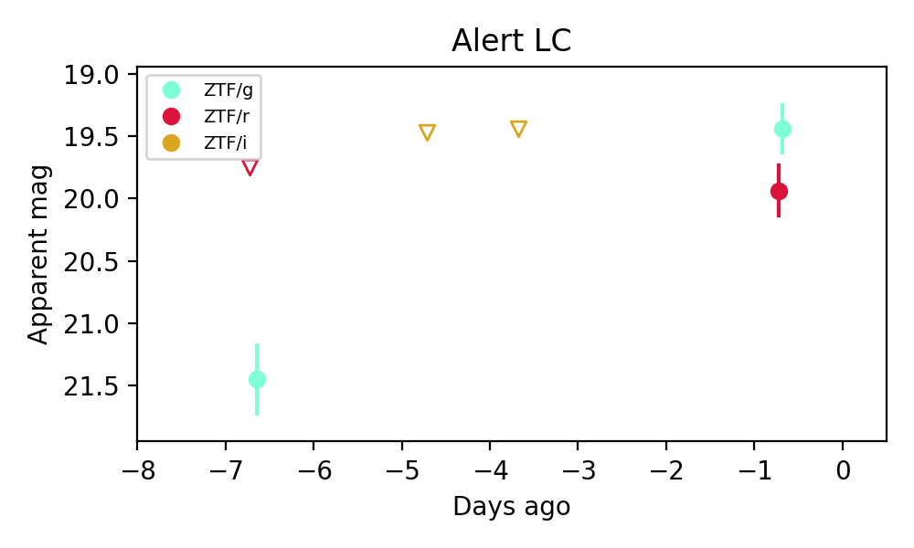
Extinction-corrected gr color:
From alerts: -0.53 +/- 0.29 mag
Rise Rate:
g: 0.34 mag/day
r: 0.06 mag/day
Fade Rate: